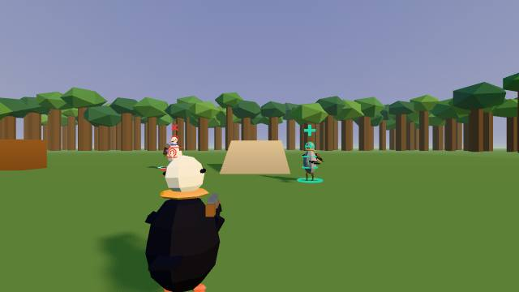
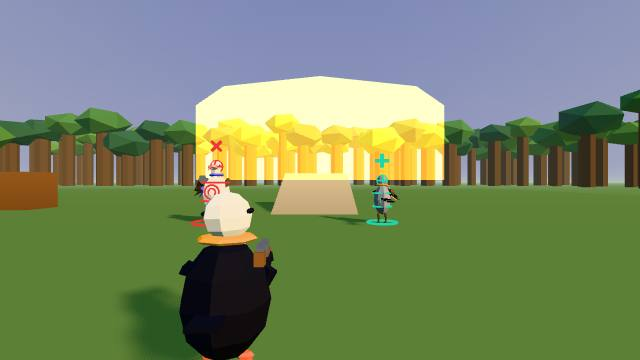
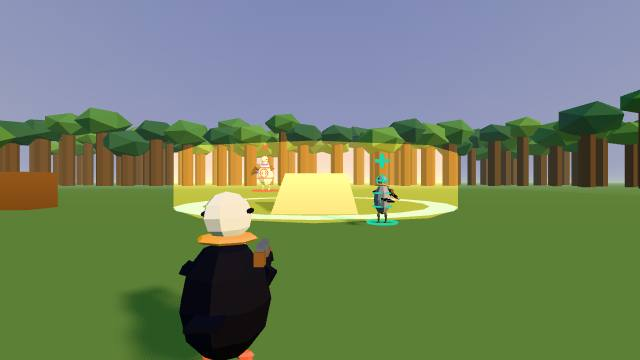

Puffin Playable
Area control · Playable since Stage 3
Appearance: short and chunky with a huge triangular bill striped orange, yellow and blue-grey, with three silver fish dangling from it; white face with a dark eye streak; bright orange feet. Black back, white belly. Reads as "squat bird with a giant striped triangle face".
How to play
Area-control birds change where the enemy can stand. Place traps and zones on the routes your enemies must take, and make them choose between walking into them and giving ground.
Puffin fights with the Eel Sling, which fires travelling projectiles you have to lead. Damage drops off between 18 m and 40 m, and head hits are beak shots worth ×1.65. Every level above 1 is a Molt: +34 max HP per level; +3% gun damage of base per level; +1 Song power per level; +3 melee damage per level.
Put Puffling turrets on the lane choke points and use Fog Bank to hide your own flock for a push. Sea Spray pushes dangerous melee birds back.
Abilities
Four abilities. Slots 1 to 3 unlock at level 1, the ultimate at level 6. Each can be upgraded three times, for 1, 2, 5 AP, in order; see Ability Points. The shortest cooldown in the kit is Sea Spray at 12 s.
1. Burrow Colony
Dig a burrow with a puffling turret (200 + 1.5 x SP HP, 20 s, at most 2). It shoots the nearest enemy within 18 m for 12 + 0.12 x SP Song damage every 0.5 s, preferring heroes. Two charges.
- Tier 1 · 1 AP+1 charge (3) and +1 maximum turret (3) +1 charge, extra +1
- Tier 2 · 2 APTurret hits slow the enemy 15% for 1 s slow +0.15
- Tier 3 · 5 APTurrets burst on death or expiry: 4 m radius, 80 + 0.6 x SP Song damage burst +4

2. Sea Spray
A 50-degree cone, 10 m long: enemies take 50 + 0.5 x SP Song damage, are knocked back 6 m and slowed 25% for 2.5 s.
- Tier 1 · 1 AP+3 m range (13 m) range +3 m, length +3
- Tier 2 · 2 AP-3 s cooldown cooldown -3 s
- Tier 3 · 5 APEnemies hit also take +15% Song damage for 4 s

3. Fog Bank
Sea fog of 7 m radius for 7 s: allies inside are invisible to enemies outside it (firing does not break it); enemies inside are revealed.
- Tier 1 · 1 AP+2 m radius (9 m) radius +2
- Tier 2 · 2 AP+3 s duration (10 s) duration +3
- Tier 3 · 5 APEnemies inside are also slowed 20%

4. Rogue Wave
A wave 16 m wide travels 30 m over 1.5 s. Enemies it reaches take 160 + 1.3 x SP Song damage once and are carried with it, up to 12 m; one carried into a wall is stunned 1.5 s.
- Tier 1 · 1 AP+6 m width (22 m) half width +3
- Tier 2 · 2 AP+60 damage (220 + 1.3 x SP) damage +60
- Tier 3 · 5 APLeaves wet ground along its path for 4 s: enemies on it are slowed 30% wet +1
Since Stage 3. See all heroes.